La película · Estreno el 20 de noviembre de 2026
El director La verdad tiene un precio
Un corresponsal con más de veinte años cubriendo guerras es nombrado director de uno de los principales diarios del país. Su defensa del periodismo riguroso choca desde el principio con los intereses ocultos del periódico, protegidos por Cardenal, el editor.

- Dirección
- Dani de la Orden
- Guion
- Alejandro Hernández y Michel Gaztambide, sobre el libro de David Jiménez
- Fotografía
- Maria Codina
- Música
- Maria Chiara Casà
- Producción
- Beta Fiction Spain, Sábado Time, Cardinal Content e Historias de un Director SL, con la participación de HBO Max, RTVE y 3Cat
- Distribución
- Beta Fiction Spain
- Género
- Thriller periodístico
- Duración
- 1 h 55 min
- Estreno
- 20 de noviembre de 2026, en cines
Teaser y avances
Reparto y personajes
Personajes y fotos según el dossier de prensa oficial de la película.
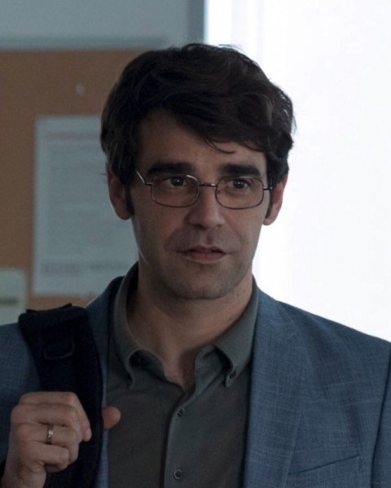
DavidDavid VerdaguerInspirado en David Jiménez CardenalAlberto San JuanInspirado en Antonio Fernández-Galiano
CardenalAlberto San JuanInspirado en Antonio Fernández-Galiano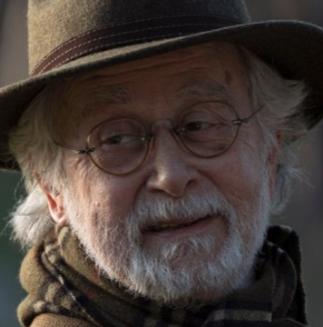
FernandoFernando ColomoPersona real: pendiente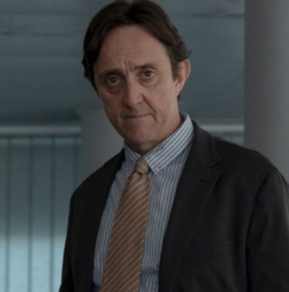
JulioJoan CarrerasPersona real: pendiente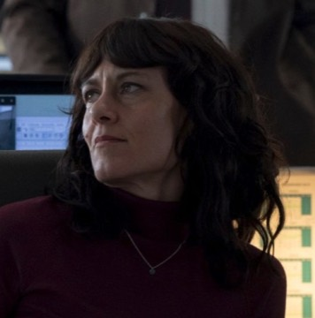
ElenaAnna AlarcónPersona real: pendiente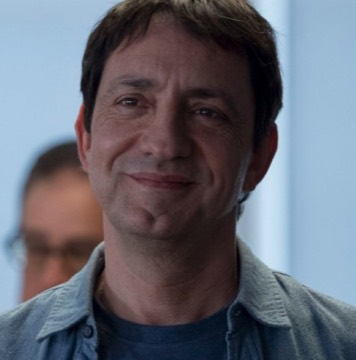
OskarDavid VertPersona real: pendiente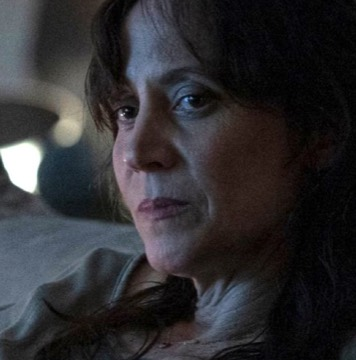
SaraMiriam IsclaPersona real: pendiente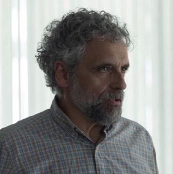
PedroPau DuràPersona real: pendiente- VirginiaAnna Sahun MartíPersona real: pendiente
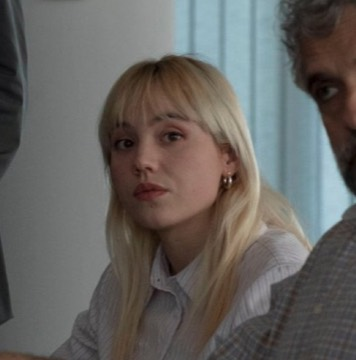
MarinaMia Sala-PatauPersona real: pendiente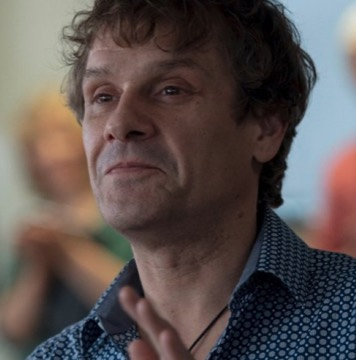
OrtegaMarc RodríguezPersona real: pendiente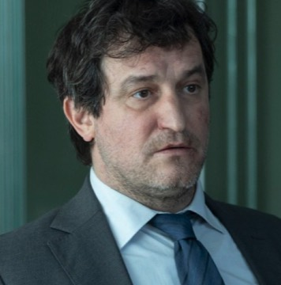
Aurelio OrtizXavi SáezPersona real: pendiente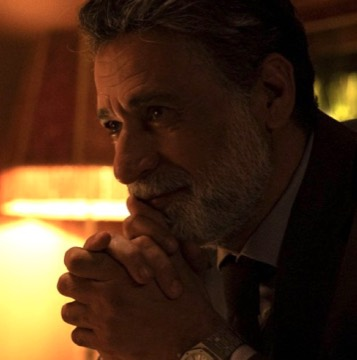
TesoreroNacho FresnedaPersona real: pendiente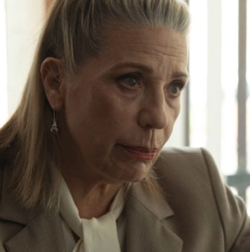
Colaboración especialJuliaEmma VilarasauPersona real: pendiente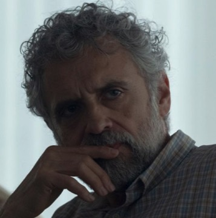
Colaboración especialVidalGuillermo ToledoPersona real: pendiente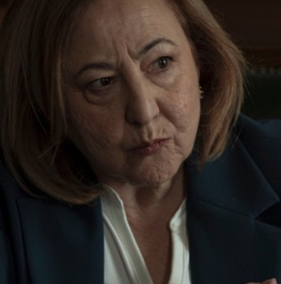
Colaboración especialVicepresidentaCarmen MachiPersona real: pendiente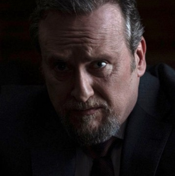
Colaboración especialMinistroFernando CayoPersona real: pendiente
Fotogramas
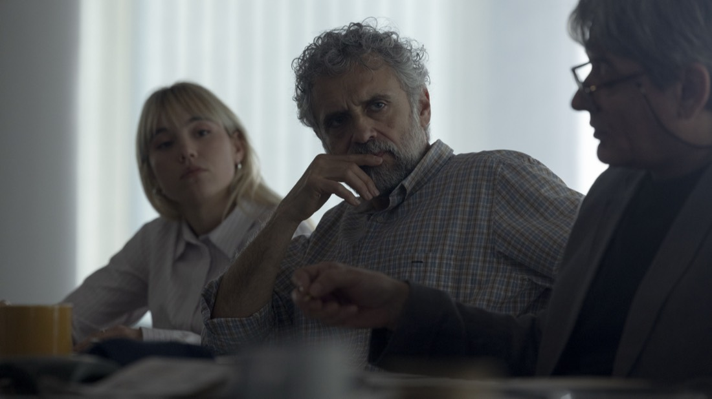
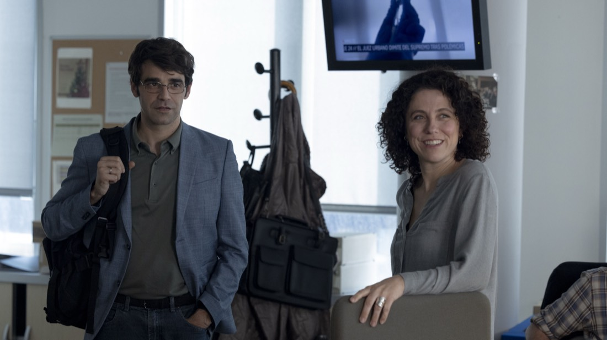
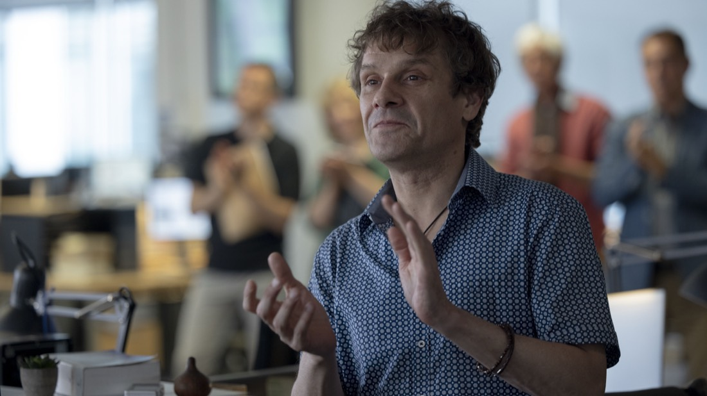
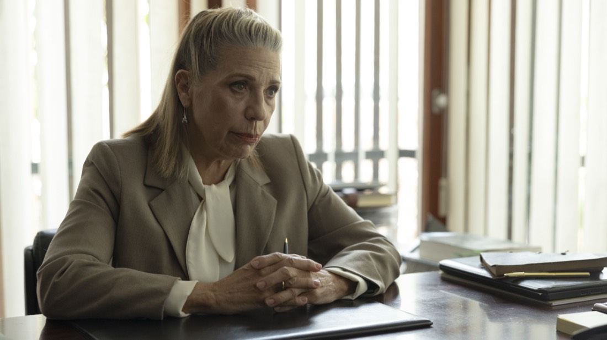
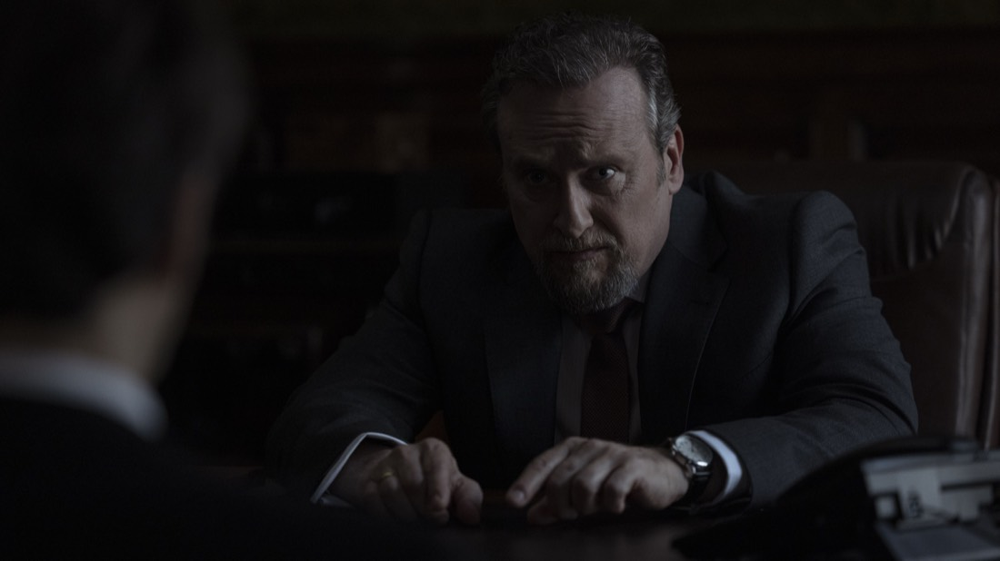
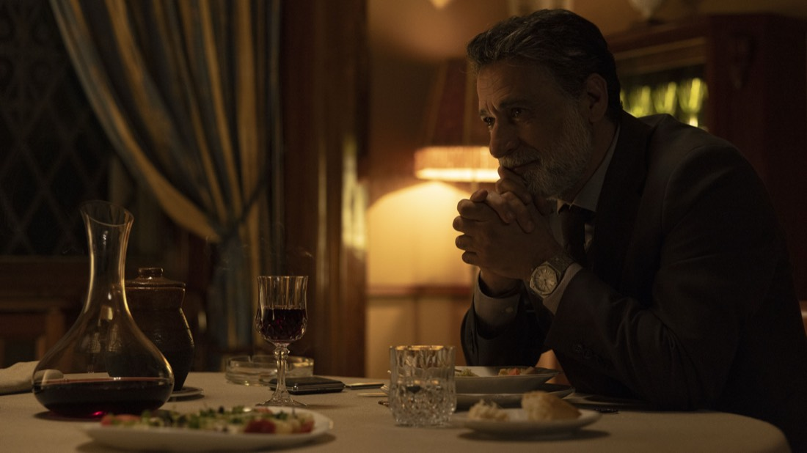
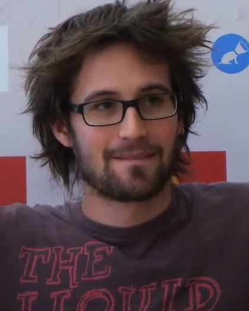
Director de Barcelona, noche de verano y Litus.
Cómo se ve
La crítica destaca una fotografía de luz fría y planos muy abiertos que aíslan al protagonista en salas de reuniones, el uso de imágenes de archivo de informativos y un ritmo de thriller. El proyecto nació como serie antes de convertirse en película.
Dónde ver la película
En cines desde el 20 de noviembre. Enlaces informativos, sin afiliación.